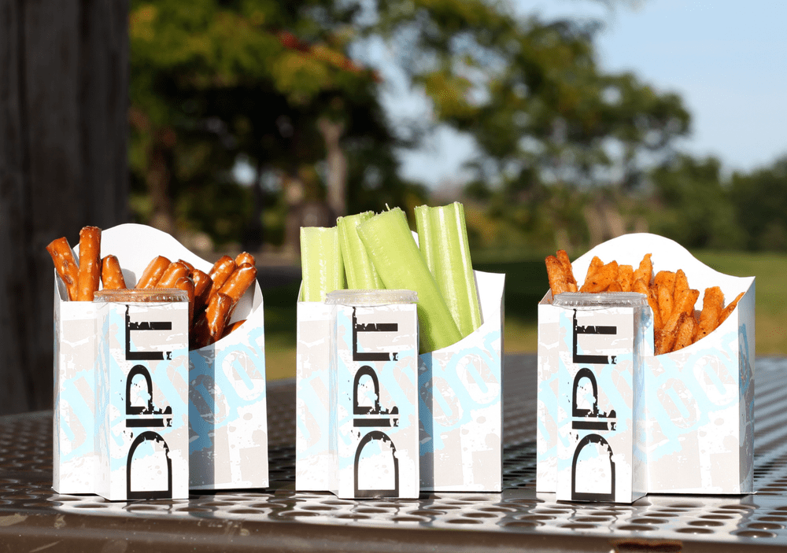

A love of finger food.
A fresh way to enjoy it.
Dipit brings together the food you love and the dip that completes it.

One everyday idea.
So many possibilities.
The Dipit brand is part of 812 Inventions LLC. Founder Toby Butler created the caddy with a simple focus: make enjoying finger food more convenient.
The product’s dedicated condiment compartment and printable surface bring function and presentation together. From an individual snack to a branded event, it is a distinctive canvas for the way you serve.
Dipit’s published mission includes supporting efforts to feed people experiencing hunger. The company states that ten percent of its annual net profit will be dedicated to that purpose.
Meet the people behind DipitFrom your first idea
to your next occasion.
A great product conversation begins with the people who will use it. Whether you are planning refreshments, exploring a wholesale order, or thinking about a custom design, tell us what you have in mind. We’ll help you start a conversation about the right product for your setting.
Start the conversation